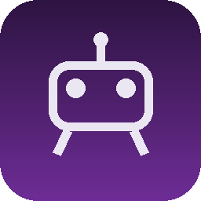

Git · Jira · SAFe / Agile / Scrum · MySQL / SQL Server / Oracle · CI/CD
Liderazgo y Educación
Liderazgo técnico · Instructor Udemy y Centyc · Creación de frameworks · Psicología
Inteligencia Artificial
Creación e integración de agentes de IA en aplicaciones y flujos de calidad. Uso estratégico de IA en ciclos de calidad, desarrollo de pruebas, ejecución, análisis y documentación. Vectorización y grafos. Testing a aplicaciones con IA Generativa: LLM como Juez y validaciones semánticas.
Proyectos
Proyectos completamente creados por mí.

QAPI
Extensión de VS Code con un agente de IA para QA y automatización: crea y corrige pruebas con el contexto de tu proyecto, usa memoria local que ahorra tokens y funciona con Gemini, Claude, OpenAI y Ollama.
Aplicación de escritorio para automatizar la creación de reportes y pruebas de software. De lo manual, a la automatización iterativa y a un pipeline en minutos!
Hoja de ruta: de líder técnico en QA a referente en calidad de sistemas con IA.
Objetivo
Posicionarme como Head of QA / QA Automation Lead con foco en IA aplicada al testing, y consolidar Haka Lab como proveedor de calidad con IA.
0 – 3 meses
Publicar el CV optimizado en LinkedIn y en este portafolio. Postular a vacantes de liderazgo QA con el correo y el bot de entrevistas ya preparados. Publicar un artículo mensual sobre testing de aplicaciones con IA generativa.
3 – 6 meses
Lanzar un curso sobre testing de aplicaciones con IA (LLM como juez, validaciones semánticas) en Centyc y Udemy. Mantener QAPI y Haka Agentic IDE con una hoja de ruta pública.
6 – 12 meses
Dar charlas en comunidades y eventos de QA. Formar a un equipo en prácticas de calidad asistidas por IA y medir el impacto en tiempos de ciclo de pruebas.
Cursos y aprendizaje
Profundizar en evaluación de LLM (evals, observabilidad), arquitectura de agentes, CI/CD con calidad continua y liderazgo de equipos escalados (SAFe).
Cómo mediré el avance
Entrevistas obtenidas, artículos y cursos publicados, y reducción de tiempos de creación y ejecución de pruebas en los proyectos donde apliquemos IA.
Reflexión final
Antes de este curso veía la IA como una herramienta más para acelerar tareas. Ahora la veo como una forma distinta de trabajar: delego lo repetitivo y me concentro en decidir, diseñar y liderar.
Aprendí que mi trayectoria estaba mal contada: tenía el nivel, pero no lo reflejaba en mi CV. La IA me ayudó a redactar logros e impacto, aunque siempre revisando y ajustando su salida con mi criterio.
En los próximos 3 meses me propongo: postular a cargos de liderazgo QA con mi CV y correo renovados, practicar entrevistas con mi bot, y publicar contenido y un curso sobre testing de aplicaciones con IA.